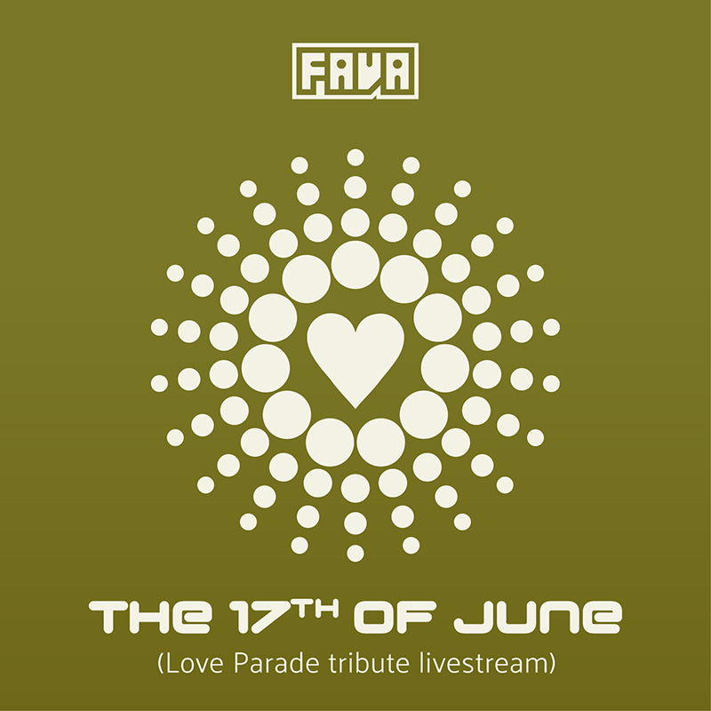
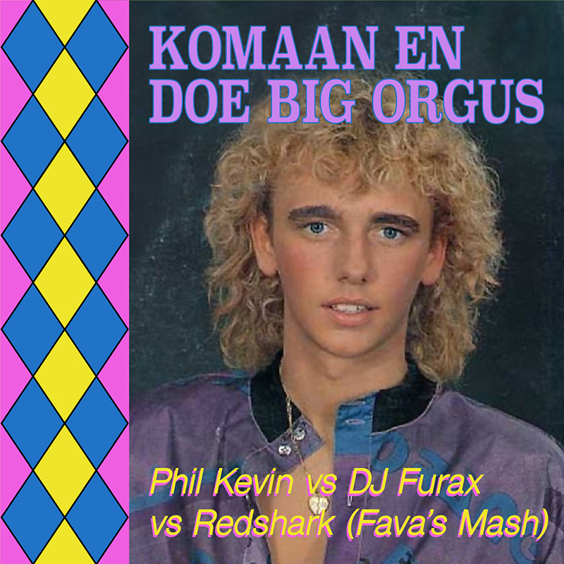
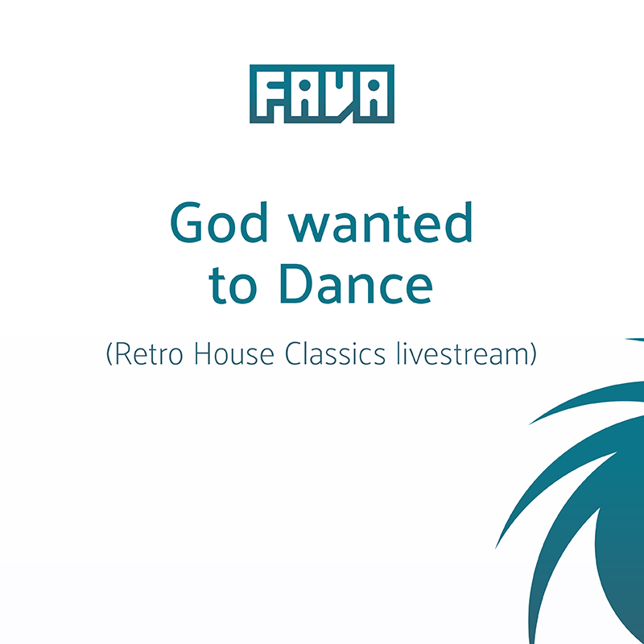
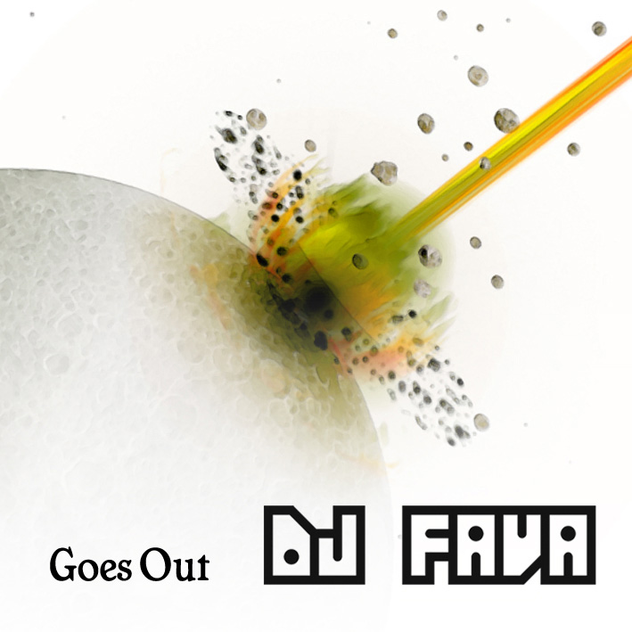

Sound Recordings, mashups, livesets & streams. Sound Live Mashup P2B Remember Retro Stream Trance Vintage Vinyl Into Sound Live at Remember The Retro Classix, spring 2022. Swarm and Multiply Tonight we Trance Vinyl edition, spring 2021. Imagine it's True Vinyl Only Birthday stream 2021. Fading of the Day Tonight we Trance Acoustic chill-out 2021. Play the Part Tonight we Trance Again livestream, autumn 2020. The 17th of June Love Parade tribute livestream 2020.  Brede manen kronk'len Non stop one hour Ros Beiaard mix. Komaan en doe Big Orgus Phil Kevin vs DJ Furax vs Redshark (Fava's Mash).  God wanted to Dance Retro House Classics livestream, spring 2020.  Pitch them five Notes up Happy Hardcore livestream, spring 2020. Vol Dromen Second Jukebox requests livestream, spring 2020. Too Loud to stay Apart An Early Trance Tale livestream, spring 2020. The 7th Dimension Old School Retro House livestream, spring 2020. Hier spricht die Polizei P2B Memories livestream, spring 2020. Tot we Samen zijn Jukebox requests livestream, spring 2020. Maybe some Dust Tonight we Trance livestream, spring 2020. Steen voor Steen Nineties livestream, spring 2020. On a Journey Vinyl livestream, spring 2020. In het Heetst van de Strijd Second livestream, spring 2020. My Soul was Weak Live at Beausoleil Reunion 2019. The table of Brotherhood Live at Cour & Jardin, spring 2019. Open Yourself Live at NYE 2018. Veel te Derb Erik Van Neygen & Sanne vs Derb (Fava's Mash). Eventjes Schuren Live at 20 jaar Fava 2018. Da Fava Punk Live at Disco Ball 2018 excerpt incl. Samson & Gert. The Joy I have Inside Live at Remember The Retro Classix, autumn 2013. Are you Listening Live at Remember The Retro Classix, autumn 2012. Take U There Live at Remember The Retro Classix, spring 2012. Never ending Circle Remember The Retro Classix Promo Mix, winter 2012. I Wanna Live at Place 2 Be, autumn 2011. Around Midnite Live at Place 2 Be, summer 2011. Het werd Zomer Live at Place 2 Be, summer 2011. What a Feeling Live at Place 2 Be, spring 2011. Summerland Live at Summerland 2009. All the way Back around Live at De Zep 2007. Goes Out Vinyl set live at Ckomilfoo The Return 2007.  Fold Space Vintage set 2005, re-recorded 2020. Dreaming Vintage vinyl set 2004. Zeil je voor Spastik Bart Kaëll vs Plastikman (Fava's Mash). Independent Live at Independent 2004. A Nice Chianti Vintage vinyl set 2004. Nacht van de Scholier Live at Nacht van de Scholier 2003 excerpt incl. Zeil je voor het Eerst. Violet Skies Vintage vinyl set 1999.